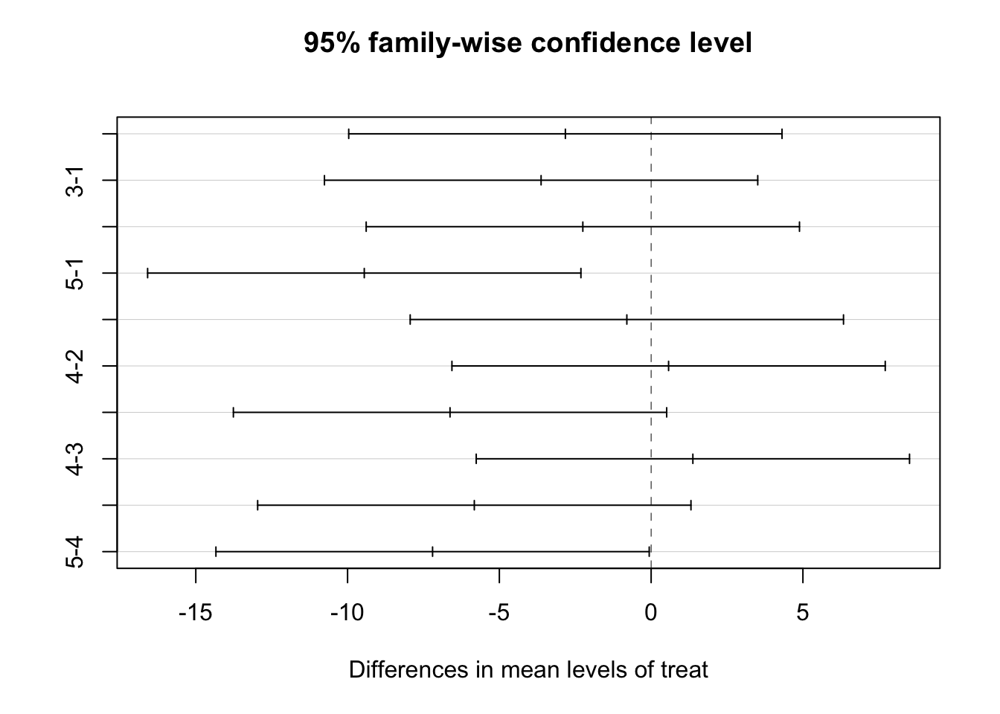

library(tidyverse)
library(kableExtra)
library(ggplot2)
library(here)
library(car)
library(agricolae)
library(DescTools)7 다중비교
7.1 필요한 패키지
7.2 일원배치에서 평균의 비교
분산분석표를 이용한 F-검정으로 귀무가설을 기각하면 모든 처리 수준의 평균이 같지 않다는 결론을 내리고
어떤 집단 간에 평균의 차이가 유의한지 더 분석해야 한다. 평균 차이에 대한 신뢰구간과 가설 검정은 아래와 같이 주어진다.
두 수준 평균의 차이 \(\delta_{ij} = \mu_i - \mu_j\) 에 대한 \(100(1-\alpha)\) % 신뢰구간은 다음과 같이 주어진다.
\[ ( \bar {y}_{i.} - \bar {y}_{j.}) \pm t(1-\alpha/2, \phi_E) \sqrt{ \frac{2MS_E}{r}} \tag{7.1}\]
두 평균의 차이 \(\delta_{ij}\) 에 대한 가설을 검정은 유의 수준 \(\alpha\)에서 다음과 같은 조건을 만족하면 위의 귀무가설을 기각한다.
\[ \left | \bar {y}_{i.} - \bar {y}_{j.} \right | > t(1-\alpha/2, \phi_E) \sqrt{ \frac{2MS_E}{r}} \tag{7.2}\]
식 7.2 에서 검정을 위한 조건의 우변을 최소유의차(least significant difference; LSD) 라고 부른다. 두 수준의 차이가 유의하려면 두 평균 차이의 절대값이 최소한 최소유의차의 값보다 커야한다.
\[ \text{LSD} =t(1-\alpha/2, \phi_E) \sqrt{ \frac{2MS_E}{r}} \]
7.3 두 개 이상의 가설
일원배치 계획에서 수준의 개수가 a 개 인 경우 처리 수준들의 차이에 대하여 비교를 한다면 \(a \choose 2\) 개의 가설검정을 수행해야 한다. 예를 들어 처리 수준이 3개 있는 경우 다음과 같이 3개의 조합에 대하여 가설 검정을 수행할 수 있다.
\[ H_{01}: \mu_1 = \mu_2, \quad H_{02}: \mu_2 = \mu_3, \quad H_{03}: \mu_3 =\mu_1 \tag{7.3}\]
가설검정에서 사용되는 유의수준(significance level, \(\alpha\))에 대하여 생각해 보자. 지금까지 가설검정을 수행할 때 유의수준 5% 라는 말을 사용해 왔는데 이것이 무슨 의미를 가지는지 알아보자.
유의수준 5%라는 것은 수행하는 가설검정에서 귀무가설이 옳은 경우에 기각하는 확률을 말한다. 예를 들어 7.3 의 3개의 검정에 대하여 각각 t-검정을 수행하는 경우 귀무가설이 옳은데 우연하게 자료가 극단적으로 나와서 귀무가설을 기각하고 대립가설을 채택하는 확률이 유의수준이며 보통 5%를 사용한다. 이러한 오류를 제 1종의 오류(Type I error; false discovery error;false positve error)라고 한다.
노트
제 1종의 오류(Type I Error): 실제로는 유의하지 않지만 검정 결과 유의하다고 판단하는 경우이며 다음과 같은 다른 이름으로는 불린다.
- False discovery error (FDE, 거짓 양성 오류)
- False positive error (FPE)
위 7.3 에서 처럼 3개의 가설 검정을 동시에 실시한다면 각각의 가설검정에서 제 1 종의 오류를 범할 확률은 5%이다. 그런데 3개의 가설 검정을 동시에 실행하므로 다음과 같이 3개의 검정을 합쳐서 다음과 같은 확률에 관심이 있을 수 있다.
3개의 가설검정을 동시에 수행할 때 제 1종의 오류가 최소한 1번 발생할 확률은 얼마인가?
세 개의 가설검정을 동시에 수행하는 경우 세 검정 모두 제 1 종의 오류를 범하거나 두 개 또는 하나의 검정에서 제 1 종의 오류를 범할 사건의 확률은 얼마나 될까? 5%보다 작을까 아니면 클까? 또는 5%인가? 간단한 확률 공식을 이용하여 알아보자.
7.4 실험단위 오류
일단 두 개의 검정 \(H_{01}\) 과 \(H_{02}\)을 각각 유의수준 \(\alpha=0.05\)로서 동시에 수행 한다고 가정하고 다음과 같은 사건을 정의한다.
- \(A_1\): \(H_{01}\) 검정에서 제 1 종의 오류를 범하는 사건
- \(A_2\): \(H_{02}\) 검정에서 제 1 종의 오류를 범하는 사건
각 검정에서 제 1 종의 오류를 범할 확률을 \(\alpha\)라고 가정하자.
\[ P( A_1 ) = P(A_2) = \alpha =0.05 \]
이제 두개의 가설검정을 동시에 수행하는 경우 제 1 종의 오류를 최소한 1번 범하는 사건은 \(P(A_1 \cup A_2)\) 이며 여사건의 확률공식을 이용하면 다음과 같이 나타낼 수 있다.
\[ P( A_1 \cup A_2 ) = 1- P(A_1^c \cap A^c_2 ) \]
여기서 우리는 \(P(A_1^c)=P(A_2^c)=1-0.05=0.95\)를 알 수 있지만 두 사건의 교집합에 대한 확률은 계산하기 쉽지 않다. 왜냐하면 두 사건 \(A_1\)과 \(A_2\)가 일반적으로 독립이 아니어서 두 확률의 곱으로 쉽게 나타낼 수 없다.
만약에 두 사건이 독립이라면 다음과 같은 결과가 나온다. 즉 두 개의 독립인 가설검정을 동시에 수행하는 경우 최소한 1번의 제 1 종의 오류를 범하는 사건의 학률은 0.0975로 5%의 두 배 정도가 된다.
\[ P( A_1 \cup A_2 ) = 1- P(A_1^c \cap A^c_2 ) =1-P(A_1^c)P(A^c_2 ) = 1-(1-0.05)^2 = 0.0975 > 0.05 \]
만약 \(k\) 개의 독립인 가설검정을 동시에 수행하는 경우 제 1 종의 오류를 최소한 1번 이라도 범하는 사건의 학률은 \(1-(1-0.05)^k\)으로 급격하게 증가한다. 예를 들어 \(k=6\)인 경우 26.5% 로 5%의 5 배가 된다. 여기서 유의할 점은 이러한 결과는 모든 가설검정이 독립이고 여러 개의 가설검정들을 동시에 고려하는 경우이다.
즉, 두 개 이상의 가설검정을 동시에 고려해서 제 1 종의 오류를 최소한 1번 범할 경우를 오류라고 한다면 그 확률은 고려하는 검정의 개수가 증가함에 따라 빠르게 커진다.
이렇게 두 개 이상의 가설검정을 동시에 고려해서 계산하는 오류의 확률을 실험단위 오류(Experiment-wise error 또는 Family-wise error)라고 하며 반대로 가설검정을 동시에 고려하지 않고 개별적로 생각하는 오류를 개별단위 오류(Individual-wise error)라고 한다.
보기 7.1 (제어집단이 있는 임상실험) 임상실험에서 신약(처리 1)의 효과가 위약(처리 2)보다는 우월하다는 사실을 입증하는 것이 일반적이다. 그런데 기존의 약(처리 3)보다 우월하다는 사실을 동시에 입증하려고 하는 경우도 있다. 이러한 경우 다음과 같은 두 개의 가설을 동시에 수행해야 한다.
\[ H_{01}: \mu_1 = \mu_2, \quad H_{02}: \mu_1 = \mu_3 \]
이러한 경우 신약(처리 1)을 제어 집단이라고 부르며 다른 두 그룹들(처이 2,3)과 각각 비교해야 한다.
3개의 집단(신약, 위약, 기존의 약)을 가진 일원배치법으로 실험을 수행한 경우 첫 번째 가설 \(H_{01}\)은 \({\bar y}_{1.} - {\bar y}_{2.}\)를 이용하고 두 번째 가설 \(H_{02}\)은 \({\bar y}_{1.} - {\bar y}_{3.}\)을 이용하여 가설검정을 한다.
이러한 경우 각 검정에 대하여 유의 수준을 5% (개별단위 오류를 범할 확률이 5%) 라고 해도 실험단위 오류를 범할 확률은 5% 보다 크다.
7.5 다중비교
다시 실험 단위 오류의 계산으로 돌아가서 만약에 두 사건이 독립이 아닌 경우에 실험적 오류를 통제할 수 있는, 즉 5%보다 작거나 같게 하는 방법에 대해서 알아보자 두 사건이 독립이 아닌 일반적인 경우에 확률 공식을 이용하여 다음과 같은 부등식을 얻을 수 있다.
\[ P( A_1 \cup A_2 ) \le P( A_1 ) + P( A_2 ) = (2)(0.05) = 0.1 \]
위의 결과를 보면 만약에 두 개의 가설검정을 동시에 수행하는 경우 각 가설검정에 대한 개별단위의 제 1 종 오류에 대한 확률을 반으로 줄이면(0.05/2=0.025) 실험적 오류가 5%보다 작거나 같게 된다.
\[ P( A_1 \cup A_2 ) \le P( A_1 ) + P( A_2 ) = (2)(0.05/2) = 0.05 \]
위에서 보인 같은 논리로서 \(k\) 개의 가설검정을 동시에 수행하는 경우 각 가설검정에 대한 개별적 1종 오류의 확률을 \(k\)배 줄이면(\(0.05/k\)) 실험단위 오류가 5%보다 작거나 같게 된다.
\[ P( A_1 \cup A_2 \cup ... \cup A_k ) \le (k)(0.05/k) = 0.05 \]
여기서 한 가지 유의할 점은 만약 두 개의 가설이 완전히 종속이거나(\(A_1 = A_2\)) 거의 종속이면 실험적 오류는 거의 변하지 않는다. 따라서 개별단위 1종 오류에 대한 수정은 거의 필요하지 않다.
\[ P( A_1 \cup A_2 ) = 1- P(A_1^c \cap A^c_2 ) \approx 1-P(A_1^c) = 0.05 \]
이렇게 실험단위 오류를 통제하기 위하여(5%보다 작거나 같게) 각 가설에 대한 개별단위 1 종 오류의 확률(유의수준)를 보정하는 방법을 다중비교(mutiple comparison) 라고 한다.
위에서 제시한 개별단위 1종 오류를 \(k\)배로 줄이는(0.05/k) 방법을 특별하게 본페로니 수정(Bonferroni correction)이라고 부른다. 본페로니 수정은 가장 보수적인 수정(most conservative correction)이라고 불리는데 그 이유는 실험적 오류가 가질 수 있는 가장 큰 값을 가정하고 보정하기 때문에 각각 수정한 개별단위 오류에 대한 유의수준이 너무 작게 되어(\(0.05/k\)) 귀무가설의 기각이 매우 힘들기 떄문이다.
만약 \(k\)개의 가설 검정에 본페로니 수정을 적용한다면 신뢰구간과 가설검정은 다음과 같이 수정된다.
두 수준 평균의 차이 \(\delta_{ij} = \mu_i - \mu_j\) 에 대한 본페로니 수정 신뢰구간은 다음과 같이 주어진다.
\[ ( \bar {y}_{i.} - \bar {y}_{j.}) \pm t(1-\alpha/(2k), \phi_E) \sqrt{ \frac{2MS_E}{r}} \tag{7.4}\]
두 평균의 차이 \(\delta_{ij}\) 에 대한 가설을 본페로니 수정 검정은 다음과 같은 조건을 만족하면 귀무가설을 기각한다.
\[ \left | \bar {y}_{i.} - \bar {y}_{j.} \right | > t(1-\alpha/(2k), \phi_E) \sqrt{ \frac{2MS_E}{r}} \tag{7.5}\]
기각역에 본페로니 수정을 하는 것은 윈래의 p-값에 가설의 개수 \(k\) 를 곱하여 수정 p-값을 사용하는 것과 같다.
\[ \text{Bonferoni adjusted p-value } = k \times \text{ unadjusted p-value } \tag{7.6}\]
일반적으로 각 가설검정들은 완전히 독립도 아니고 또한 완전한 종속도 아니다. 따라서 실험단위 오류는 각 가설 검정들이 어떻게 확률적으로 관련되어 있느냐에 따라 매우 달라진다. 이러한 이유로 인하여 다중비교의 방법은 매우 다양하며, 선택한 방법에 따라서 검정의 결과도 매우 달라질 수있는 사실에 유의해야 한다. 다중비교의 방법을 선택하는 것은 매우 어려운 일이다.
가설이 2개 이상 있는 경우 실험단위의 오류의 확률을 제어해야 하는지에 대한 판단은 상황에 따라서 달라진다.
앞에서 살펴본 임상실험의 예와 같이 중요한 의사 결정을 동시에 수행하는 2개 이상의 검정 결과에 따라서 해야할 경우 주로 다중 비교를 적용한다.
또한 다중 비교 방법은 실험의 설계와 목적에 따라서 많은 방법들이 존재한다. 주어진 실험 계획과 목적에 부합하는 다중 비교법을 선택해야 한다.
반면 탐색적인 목적으로 여러 개의 가설 검정을 동시에 수행하는 경우에는 다중비교를 적용하지 않거나 다중 비교보다 더 유연한 False Discovery Rate 방법(참조) 을 사용한다.
7.6 다중비교 방법
이제 다중비교를 수행할 수 있는 중요한 방법들을 알아보고 저혈당 임상실험 예제에 적용해 보자.
앞에서 살펴본 저혈당 임상실험은 5개의 처리가 있다. 따라서 \({5 \choose 2} =10\) 개의 가설 검정(또는 신뢰구간)을 수행해야 한다.
5개 치료집단(treat)이 처리 수준이며 각 처리수준 은 1, 2, 3, 4, 5 로 표시된다.
7.6.1 다중비교 방법을 적용하지 않는 경우
먼저 다중비교 방법을 적용하지 않는 경우 결과를 보자. 함수 LSD.test 에서 p.adj=c("none")를 지정하면 다중 비교를 적용하지 않는다. 명령문 p.adj 를 지정하지 않으면 수정을 하지 않는 LSD 방법에 의한 신뢰 구간 7.1 와 검정 방법 7.2 로 구한 결과를 준다.
LSD 방법을 적용하는 경우 유의한 차이를 보이는 조합이 4개로 나타났다 (1-5,2-5,3-5,4-5).
diabetes <- read.csv(here("data", "chapter-5-data.txt"), sep='', header = F)
colnames(diabetes) <- c("treat", "baseline", "response")
diabetes$treat<- factor(diabetes$treat)
diabetes <- diabetes %>% arrange(treat)anova.res <- aov(response~treat,data=diabetes) #일원배치
test1 <- LSD.test(anova.res, "treat", alpha = 0.05, group = FALSE, console = FALSE, p.adj=c("none") )
test1$comparison difference pvalue signif. LCL UCL
1 - 2 2.825 0.2405 -2.1014081 7.751408
1 - 3 3.625 0.1376 -1.3014081 8.551408
1 - 4 2.250 0.3458 -2.6764081 7.176408
1 - 5 9.450 0.0010 *** 4.5235919 14.376408
2 - 3 0.800 0.7341 -4.1264081 5.726408
2 - 4 -0.575 0.8069 -5.5014081 4.351408
2 - 5 6.625 0.0118 * 1.6985919 11.551408
3 - 4 -1.375 0.5608 -6.3014081 3.551408
3 - 5 5.825 0.0235 * 0.8985919 10.751408
4 - 5 7.200 0.0071 ** 2.2735919 12.1264087.6.2 본페로니 수정(Bonferroni correction)
이제 다중비교 방법 중에 가장 보수적인 본페로니 수정(Bonferroni correction)을 적용해 보자. 함수 LSD.test 에서 p.adj=c("bonferroni")를 이용한다.
아래의 결과는 본페로니 수정 방법에 의한 신뢰 구간 7.4 와 검정 방법 7.5 으로 구한 결과이다.
본페로니 수정이 적용된 신뢰구간은 LSD 방법의 신뢰구간보다 길며 수정된 p-값 7.6 은 LSD 방법으로 구한 값의 10배이다.
LSD 방법을 적용하는 경우 유의한 차이를 보이는 조합이 4개로 나타났는데(1-5,2-5,3-5,4-5) 본페로니 수정을 적용한 경우에는 1개로 줄어 들었다(1-5).
수정한 p-값이 1이 초과하면 확률이기 때문에 1로 주어진다.
test2 <- LSD.test(anova.res, "treat", alpha = 0.05, group = FALSE, console = FALSE, p.adj=c("bonferroni") )
test2$comparison difference pvalue signif. LCL UCL
1 - 2 2.825 1.0000 -4.7700036 10.420004
1 - 3 3.625 1.0000 -3.9700036 11.220004
1 - 4 2.250 1.0000 -5.3450036 9.845004
1 - 5 9.450 0.0097 ** 1.8549964 17.045004
2 - 3 0.800 1.0000 -6.7950036 8.395004
2 - 4 -0.575 1.0000 -8.1700036 7.020004
2 - 5 6.625 0.1177 -0.9700036 14.220004
3 - 4 -1.375 1.0000 -8.9700036 6.220004
3 - 5 5.825 0.2355 -1.7700036 13.420004
4 - 5 7.200 0.0709 . -0.3950036 14.7950047.6.3 Tukey의 HSD
함수TukeyHSD는 분산분석을 실행한 결과를 이용하여 다중비교 방법 중 가장 많이 이용되는 Tukey’s Honest Significant Difference (HSD) 방법으로 다중비교를 제공한다.
Tukey의 HSD는 너무 보수적인 결과를 주는 본페로니 수정을 개선한 것이다. 따라서 Tukey의 HSD 에서 얻은 결과는 수정하지 않는 LDS 의 결과와 Bonferoni 방법의 중간에 있다고 할 수 있다.
Tukey의 HSD 에서는 본페로니와 유사하게 2개의 조합(1-5,4-5)만이 유의한 차이가 있다고 나타난다.
test3 <- TukeyHSD(anova.res, conf.level = 0.95, ordered=FALSE)
test3 Tukey multiple comparisons of means
95% family-wise confidence level
Fit: aov(formula = response ~ treat, data = diabetes)
$treat
diff lwr upr p adj
2-1 -2.825 -9.962104 4.31210359 0.7391923
3-1 -3.625 -10.762104 3.51210359 0.5376665
4-1 -2.250 -9.387104 4.88710359 0.8628887
5-1 -9.450 -16.587104 -2.31289641 0.0073287
3-2 -0.800 -7.937104 6.33710359 0.9965642
4-2 0.575 -6.562104 7.71210359 0.9990516
5-2 -6.625 -13.762104 0.51210359 0.0751342
4-3 1.375 -5.762104 8.51210359 0.9737551
5-3 -5.825 -12.962104 1.31210359 0.1380280
5-4 -7.200 -14.337104 -0.06289641 0.0475257plot(test3)
7.6.4 FDR 방법
False Discovery Rate (FDR)는 다중 비교에서 기각된 가설 중 실제로 제 1 종 오류가 일어난 비율, 즉 실제 거짓 양성인 비율을 의미한다.
수식적으로 FDR은 다음과 같이 표현할 수 있다.
\[ \text{FDR} = \mathbb{E} \left[ \frac{V}{R} \right] \quad (R > 0), \quad \tag{7.7}\]
위의 7.7 에서 \(V\) 와 \(R\) 은 다음과 같이 정의되며
- \(V\): 거짓 양성(False Positives)의 수
- \(R\): 유의하다고 판단된 전체 가설의 수
FDR은 기대값을 의미하며, 여기서는 비율의 평균을 의미한다.
FDR을 제어하기 위해 여러 가지 방법이 제안되었으며 이 중 가장 널리 사용되는 방법은 Benjamini-Hochberg 절차(BH FDR) 이고 검정의 절차는 다음과 같다.
먼저 \(m\) 개의 가설 검정을 한다고 가정하자.
- 유의 수준 \(\alpha\) 에 대해, 모든 p-값을 오름차순으로 정렬한다. 정렬된 p-값 \(p_{(i)}\) 에 해당하는 귀무가설을 \(H_{(i)}\) 라고 하자.
\[ p_{(1)} ~ \le ~ p_{(2)} ~ \le ~ ... ~ \le ~ p_{(m)} \]
- 오름차순으로 정렬한 경우 \(i\) 번째 p-값 \(p_{(i)}\) 에 해당하는 새로운 유의수준 \(\alpha^*_i\) 을 다음과 같이 계산한다.
\[ \alpha^*_i = \frac{i}{m} \alpha \]
- \(p_{(i)} \le \alpha^*_i\) 를 만족하는 가장 큰 \(i=i^*\) 를 찾는다.
\[ i^* = \max \{ i: p_{(i)} \leq \alpha^*_i \} \]
- \(i^*\) 보다 작거나 같은 p-값을 유의하다고 판단한다. 즉, 가설 \(H_{(1)}, H_{(2)}, \dots, H_{(i^*)}\) 를 기각한다.
정렬된 p-값 중에서 \(p_{(i^*)}\) 까지의 가설을 기각하고 나머지 가설은 기각하지 않는다.
이러한 BH 절차는 FDR을 유의수준 \(\alpha\) 이하로 유지하도록 설계된 방법이다. BH 절차는 본페로니 수정보다 덜 보수적이며, 거짓 발견의 비율을 직접 제어하므로 검정력을 유지할 수 있다는 장점이 있다.
FDR 조정은 생물학, 유전학, 심리학 등 여러 분야에서 사용되며, 특히 유전자 발현 연구와 같은 대량 데이터 분석에서 주로 사용된다. 예를 들어 유전자 발현 데이터에서 수천 개의 유전자에 대해 차이가 있는지 검정하는 경우 FDR 조정을 통해 거짓 양성을 제어할 수 있다. 하지만, 가설들 간의 상관관계에 민감하게 작동할 수 있다.
이제 위에서 설명한 방법으로 저혈당 임상실험에 FDR을 적용해 보자.
아래 코드는 LSD 방법으로 계산된 p-값을 작은 순서대로 정렬하고 BH 절차를 통하여 새로운 유의수준 \(\alpha_i\) (BH_alpha) 를 계산하여 FDR을 적용한 결과를 보여준다.
10개의 가설 검정 중 BH 절차를 적용한 결과는 3개의 가설이 유의하다고 판단되었다.
ordinary_p <- test1$comparison %>% dplyr::select(pvalue)
ordered_p <- ordinary_p %>% arrange(pvalue)
ordered_p <- ordered_p %>% dplyr::mutate(BH_alpha = 0.05* (1:length(pvalue))/length(pvalue))
ordered_p pvalue BH_alpha
1 - 5 0.0010 0.005
4 - 5 0.0071 0.010
2 - 5 0.0118 0.015
3 - 5 0.0235 0.020
1 - 3 0.1376 0.025
1 - 2 0.2405 0.030
1 - 4 0.3458 0.035
3 - 4 0.5608 0.040
2 - 3 0.7341 0.045
2 - 4 0.8069 0.050stats 패키지에 p.adjust 함수의 BH 방법을 활용하면 FDR 제어 방법을 적용한 수정된 p-값을 계산할 수 있다. FDR 제어 방법을 적용한 수정된 p-값 은 원래 p-값보다 크며 0.05 보다 작으면 가설을 기각할 수 있다.
FDR_BH_p <- p.adjust(ordinary_p$pvalue, method = "BH")
FDR_BH_p [1] 0.40083333 0.27520000 0.49400000 0.01000000 0.80690000 0.80690000
[7] 0.03933333 0.70100000 0.05875000 0.03550000new_p <- ordinary_p %>% dplyr::mutate(pvalue_FDR = FDR_BH_p)
new_p pvalue pvalue_FDR
1 - 2 0.2405 0.40083333
1 - 3 0.1376 0.27520000
1 - 4 0.3458 0.49400000
1 - 5 0.0010 0.01000000
2 - 3 0.7341 0.80690000
2 - 4 0.8069 0.80690000
2 - 5 0.0118 0.03933333
3 - 4 0.5608 0.70100000
3 - 5 0.0235 0.05875000
4 - 5 0.0071 0.03550000위에서 살펴본 수정을 하지 않은 LSD 방법, Tukey의 HSD, FDR의 BH 절차와 본페로니 수정 방법에서 계산된 p-값을 아래 표에서 비교하였다. 각 수정된 p-값이 유의수준 (0.05) 보다 작으면 유의한 차이가 있다고 판단한다.
comp_pval <- data.frame(comp_group=rownames(test1$comparison),
LSD = test1$comparison$pvalue,
FDR_BH = p.adjust(test1$comparison$pvalue, method = "BH"),
HSD = round(as.numeric(test3$treat[,4]),4),
Bonf = test2$comparison$pvalue
)
comp_pval comp_group LSD FDR_BH HSD Bonf
1 1 - 2 0.2405 0.40083333 0.7392 1.0000
2 1 - 3 0.1376 0.27520000 0.5377 1.0000
3 1 - 4 0.3458 0.49400000 0.8629 1.0000
4 1 - 5 0.0010 0.01000000 0.0073 0.0097
5 2 - 3 0.7341 0.80690000 0.9966 1.0000
6 2 - 4 0.8069 0.80690000 0.9991 1.0000
7 2 - 5 0.0118 0.03933333 0.0751 0.1177
8 3 - 4 0.5608 0.70100000 0.9738 1.0000
9 3 - 5 0.0235 0.05875000 0.1380 0.2355
10 4 - 5 0.0071 0.03550000 0.0475 0.0709위의 표를 수정이 되지 않은 LSD 방법으로 계산된 p-값을 기준으로 정렬하면 다음과 같다.
comp_pval %>% dplyr::arrange(LSD) comp_group LSD FDR_BH HSD Bonf
1 1 - 5 0.0010 0.01000000 0.0073 0.0097
2 4 - 5 0.0071 0.03550000 0.0475 0.0709
3 2 - 5 0.0118 0.03933333 0.0751 0.1177
4 3 - 5 0.0235 0.05875000 0.1380 0.2355
5 1 - 3 0.1376 0.27520000 0.5377 1.0000
6 1 - 2 0.2405 0.40083333 0.7392 1.0000
7 1 - 4 0.3458 0.49400000 0.8629 1.0000
8 3 - 4 0.5608 0.70100000 0.9738 1.0000
9 2 - 3 0.7341 0.80690000 0.9966 1.0000
10 2 - 4 0.8069 0.80690000 0.9991 1.0000위 표에서 볼 수 있듯이 다중비교 수정을 적용하지 않는 LSD 방법에서는 4개의 가설이 유의하다고 나타났다. FDR의 BH 절차를 적용하면 3개의 가설이 유의하다고 나타났으며 Tukey의 HSD 에서는 2개의 가설이 유의하다고 나타났다. 본페로니 수정 방법에서는 유의한 차이가 하나의 가설에서만 나타났다.
본페로니 수정은 가장 보수적이며 FDR의 BH 절차는 다중비교 방법 중 상당히 유연한 방법이다.
7.6.5 Dunnett 비교
보기 7.1 에서 설명하듯이 임상실험에서는 하나의 기준집단 또는 제어집단(control group)을 다른 여러 개의 집단과 비교하는 경우가 흔하다. 이러한 경우 사용할 수 있는 다중비교 방법이 Dunnett의 방법이다.
Dunnett의 방법은 패키지 DescTools 의 DunnettTest() 함수로 실행할 수 있다.
이제 예를 들어 저혈당 실험에서 그룹 1 을 기준 집단이라고 하고 나머지 4개의 집단과 평균이 다른지 검정하고 싶다고 하자. 다음과 같이 반응변수, 그룹변수 그리고 기준집단(control)의 값을 지정해 주면 된다.
첫 번쨰 기준집단(control)은 5번째 집단과 유의한 차이가 있다.
test4 <- DunnettTest(diabetes$response, diabetes$treat, control = 1, conf.level = 0.95)
test4
Dunnett's test for comparing several treatments with a control :
95% family-wise confidence level
$`1`
diff lwr.ci upr.ci pval
2-1 -2.825 -9.133182 3.483182 0.5694
3-1 -3.625 -9.933182 2.683182 0.3639
4-1 -2.250 -8.558182 4.058182 0.7334
5-1 -9.450 -15.758182 -3.141818 0.0035 **
---
Signif. codes: 0 '***' 0.001 '**' 0.01 '*' 0.05 '.' 0.1 ' ' 1